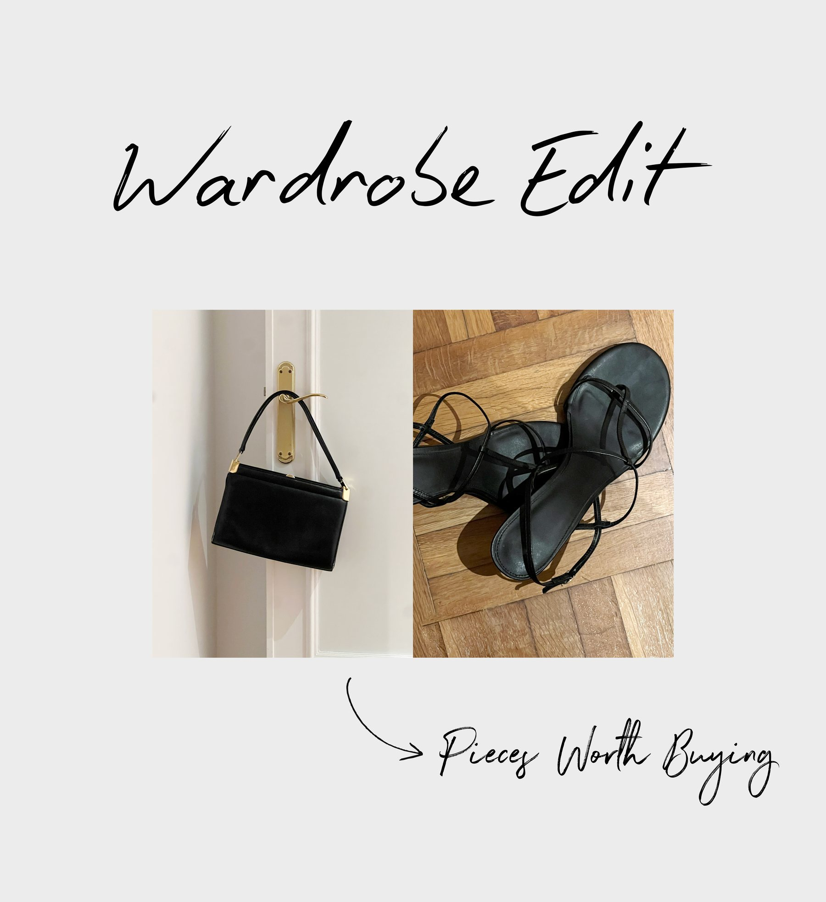

Wardrobe Edit: Pieces Worth Buying

Key Pieces A/W 26’
Pulsa cada palabra para ver la pieza
Pieces worth buying
- trenchGabardina oversize de algodón, TotemeSanta Eulalia ↗ (se abre en otra pestaña)
- earringsThe Lola Earrings, ónix negroLié Studio ↗ (se abre en otra pestaña)
- bagAgnes 16, The RowMytheresa ↗ (se abre en otra pestaña)
- shirtCamisa holgada de popelina de algodónCeline ↗ (se abre en otra pestaña)
- nightVestido de punto con espalda descubiertaSaint Laurent ↗ (se abre en otra pestaña)
- leatherChaqueta de piel con alamaresMassimo Dutti ↗ (se abre en otra pestaña)
- teeCamiseta Tilly, Victoria BeckhamMytheresa ↗ (se abre en otra pestaña)
- braceletBone cuff, Elsa PerettiTiffany & Co. ↗ (se abre en otra pestaña)
- jeans501 ’90s SelvedgeLevi’s ↗ (se abre en otra pestaña)
- flatsBailarinas, TotemeFarfetch ↗ (se abre en otra pestaña)
- pijamaPijama de seda CocoOlivia von Halle ↗ (se abre en otra pestaña)
- loafersMocasines 2200P, piel Antik negraCastellano ↗ (se abre en otra pestaña)
- bootsBotines Nevada, KhaiteLuisaViaRoma ↗ (se abre en otra pestaña)
- clutchClutch Nina Medium, Aesther EkmeMytheresa ↗ (se abre en otra pestaña)
- scarfBufanda de cachemirCOS ↗ (se abre en otra pestaña)
- woolPunto de lanaUniqlo ↗ (se abre en otra pestaña)
- dressVestido midi de tirantes con linoMassimo Dutti ↗ (se abre en otra pestaña)
- heelsSandalias Bare, The RowMytheresa ↗ (se abre en otra pestaña)
- blazerAmericana de dos botones, lana extrafinaMassimo Dutti ↗ (se abre en otra pestaña)